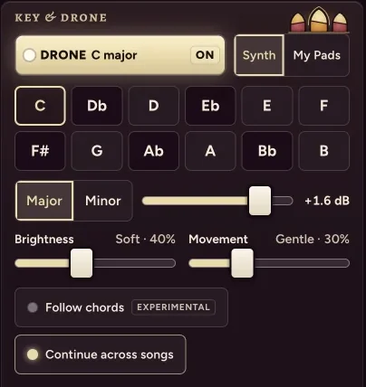
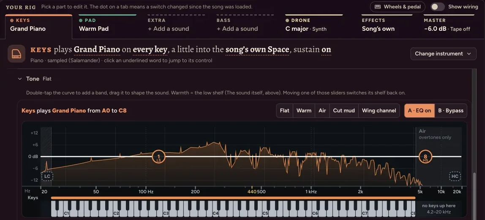
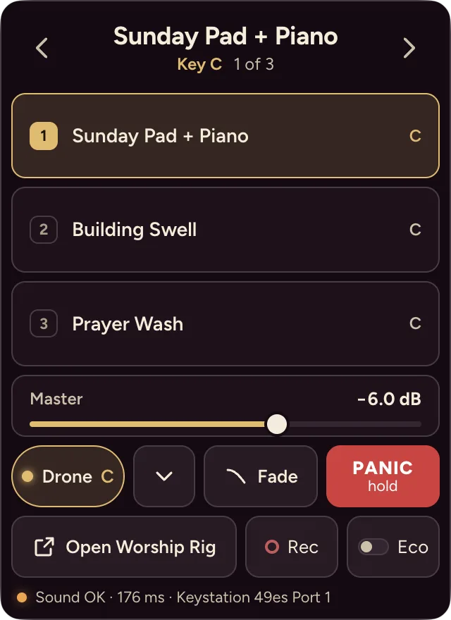
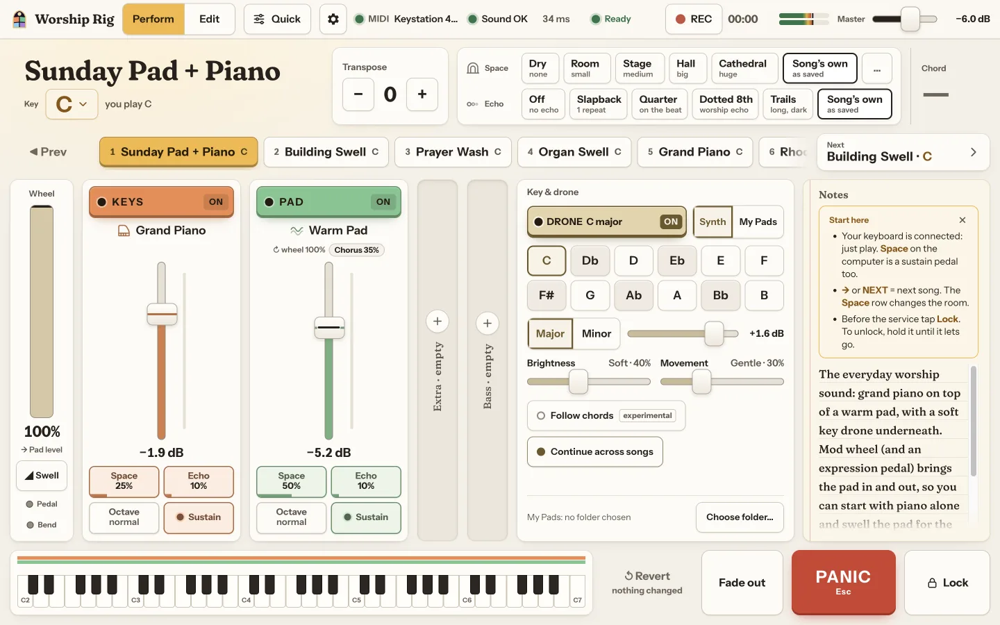

Key & drone
Play in any key
Set the song's key and a soft drone holds the root, fifth and octave underneath, with no third, so it sits under major and minor chords and crossfades when the key changes.

Keys · Pad · Extra · Bass
Four sounds per song, shaped to the room
Each part gets its own level, space, echo and an 8-band EQ drawn over a piano keyboard, so you can see which notes a cut will touch.

Menu bar mode
Keep it running in the menu bar
Close the window and keep playing: switch songs, the drone and the master level from the menu bar.
10 on Activity Monitor's energy scale while hidden, 55 in front, measured with the drone playing.
Appearance
Eight looks for the stage and the booth
Two light, six dark. Sanctuary is the default (themes.js).
- ClassicDark
- SanctuaryDark · default
- Sanctuary DayLight
- Daylight StageDark
- Daylight DayLight
- StudioDark
- EmberDark
- NaveDark

Get Worship Rig
Free and open source. Plug in a MIDI keyboard, pick a song, play. Everything runs on your Mac.
Apple Silicon · Intel · all downloads. Ad-hoc signed: see the first-launch steps below.
v1.0.0 · about 191 MB download (arm64) / 198 MB (x64), about 370 MB installed, measured on the release builds.
Details
Install
- Open the
.dmgand drag Worship Rig to Applications. macOS 12 or later; Apple Silicon (arm64) or Intel (x64). - First launch. The app isn't notarized, so macOS says it "could not verify" it (on
macOS 15 and later right-click › Open no longer gets past this). Click Done, then
System Settings › Privacy & Security › Open Anyway. Or once in Terminal:
xattr -dr com.apple.quarantine "/Applications/Worship Rig.app" - MIDI. macOS usually doesn't ask about a USB keyboard; if it does, allow it. If the MIDI light stays off, pick the keyboard in Settings › MIDI keyboard › Input. No keyboard? The computer keys play notes too.
- Output. Use the headphone jack or a wired interface, not Bluetooth: Bluetooth measured 176 ms against 20 ms on a USB-C dock (hardware check).
Full steps: README › Running on your Mac.
What's in the box
- 23 sample sets (79.2 MB): grand and upright piano, electric pianos, mallets, bells, guitars, harp and more (LICENSES.md).
- 16 synth patches (synth.js, synth-extra.js) plus a drawbar organ with a rotary speaker (organ.js).
- 19 songs in five groups, each with a note on what it's for (presets.js, README), and 6 Spaces, 5 Echoes and 6 Vibes (fx-presets.js).
- Starter library: worship-rig-starter-library.json (62 KB), loaded from Settings › Library & backups › Import…
Sounds from GarageBand or Logic
If GarageBand or Logic is installed, a small command-line tool converts their sampled instruments into your My Samples folder and they show up in the instrument picker. Those sounds are Apple's and licensed to you for personal use: they stay on your Mac, and Worship Rig never ships, uploads or shares them. Step by step: docs/garageband-import.md.
Full-size screenshots (1440×900, Sanctuary): Perform · Edit · EQ · Settings · Appearance and menu bar.